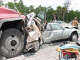

Vous traversez la rue dans l'espoir qu'en face, vous soyez moins exposé. Mais un camion passe et vous écrase contre une autre voiture. St Pierre vous explique que les flèches étaient maudites!
Retour
